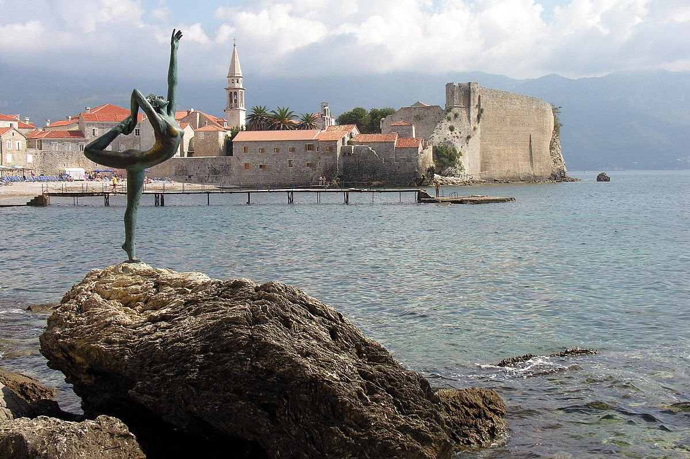
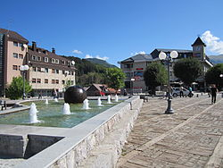
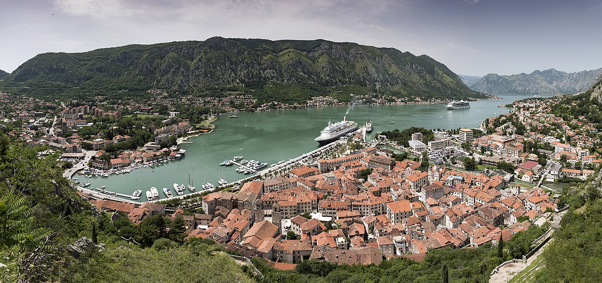
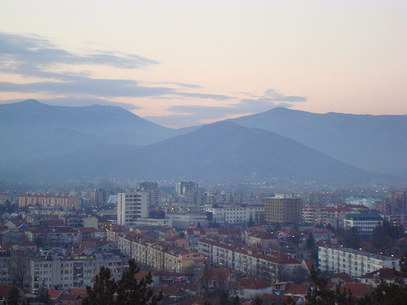
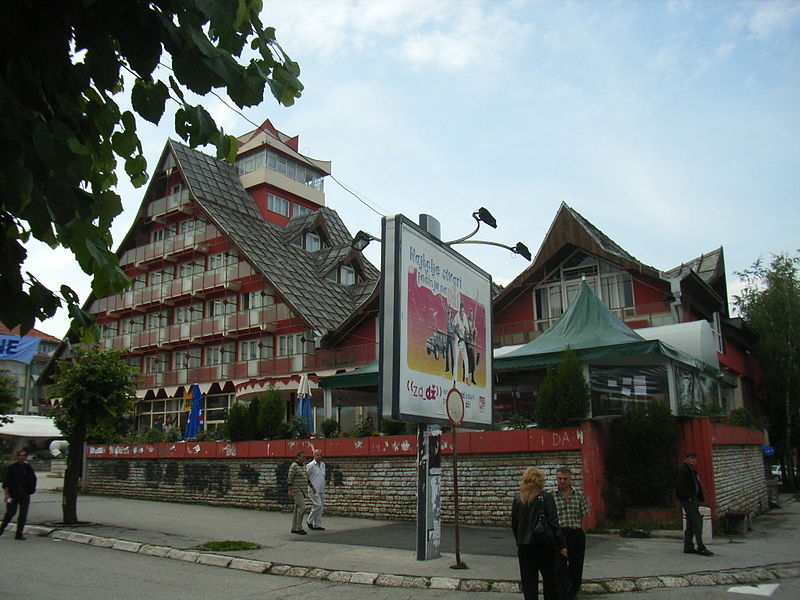
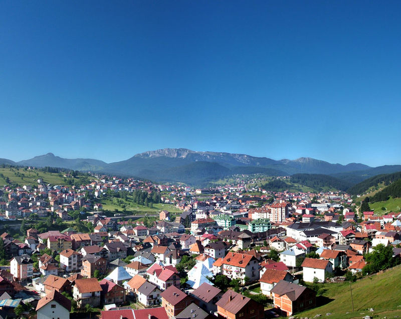
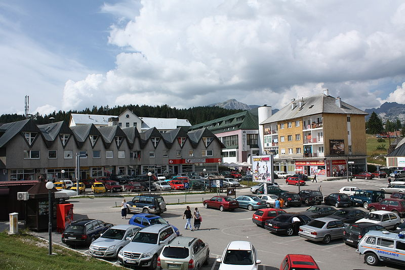

| 1. |
Bar |
Južna regija |
13719 |
- Dvorac kralja Nikole
- Stara maslina
- Tvrđava Stari Bar
|
 |
| 2. |
Budva |
Južna regija |
19218 |
- Ostrvo Sveti Nikola
- Citadela
- Statua balerine
|
 |
| 3. |
Cetinje |
Centralna regija |
16657 |
- Biljarda
- Cetinjski manastir
- Zetski dom
|
 |
| 4. |
Danilovgrad |
Centralna regija |
18472 |
- Spuška tvrđava
- Most Jelene Anžujske
- Martinićka Gradina
|
 |
| 5. |
Kolasin |
Sjeverna regija |
9949 |
- Crkva Svetog Trojstva
- Kula Radzhepagich
- Samostan Visokog Dečana
|
 |
| 6. |
Kotor |
Južna regija |
13510 |
- Stari grad Kotor
- Katedrala Svetog Trifuna
- Tvrđava San Giovanni
|
 |
| 7. |
Niksic |
Centralna regija |
56970 |
- Palata-muzej Nikole I Petrovića Njegoša
- Tvrđava Bedem
- Carski most
|
 |
| 8. |
Pljevlja |
Sjeverna regija |
30786 |
- Manastir Svete Trojice
- Husein Pašina džamija
- Municipium S
|
 |
| 9. |
Podgorica |
Centralna regija |
197589 |
- Hram Hristovog Vaskrsenja
- Most na Ribnici
- Sahat kula
|
 |
| 10. |
Rozaje |
Sjeverna regija |
9567 |
- Ganića kula
- Džamija Sultana Murata II
- Narodni muzej Rožaje
|
 |
| 11. |
Tivat |
Južna regija |
9367 |
- Ostrvo Cvijeca
- Pine Riva
- Ostrvo Gospe od Milosti
|
 |
| 12. |
Zabljak |
Sjeverna regija |
1723 |
- Stećci
- Most na Đurđevića Tari
- Momčilov grad
|
 |